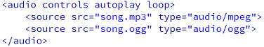
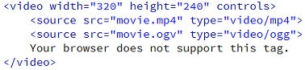

Voorheen was het niet standaard mogelijk om audio & video bestanden af te spelen op je webpagina. Dit kon wel, met bepaalde plugins (Flash/Silverlight). Het nadeel daarvan is dat verschillende browsers verschillende plugins gebruiken. Vanaf nu is dat opgelost door de <audio> en <video> tag.
Property
Audio
9.0
4.0
5.0
4.0
12.0
Video
9.0
4.0
5.0
4.0
12.0
Zoals je ziet worden de audio en video door al webbrowsers ondersteund. Echter is er wel een kanttekening. Er bestaan meerdere formaten audio en video bestanden. En niet elke browser ondersteund deze formaten.
Let op:
Internet Explorer 8 en lager ondersteunen de audio en video tags niet!
Audio
Een overzicht welke browser, welke formaten ondersteund zie je hier onder.
Browser
MP3
Wav
Ogg
Internet Explorer 9+
YES
NO
NO
FireFox
YES
YES
YES
Chrome
YES
YES
YES
Safari
YES
YES
NO
Opera
YES
YES
YES
Mogelijk dat de nieuwere versies van IE, FireFox en Chrome inmiddels wel andere van bovenstaande formaten ondersteunen. Dit kun je testen op de site http://www.html5test.com
Opdracht 1: testen
Zorg dat je de nieuwste versies van de drie bovenstaande browsers hebt geïnstalleerd.
Scroll naar beneden totdat je bij het audio gedeelte bent. Controleer welke formaten door welke browser worden ondersteund.
Zijn er verschillen met de bovenstaande tabel?
Je ziet, mits er geen verschillen zijn met bovenstaande tabel, dat je het geluidsbestand in minimaal twee formaten moet toevoegen aan je website, wil deze werken. Het gangbare formaat is MP3. Als je goed kijkt wordt door Opera MP3 niet ondersteund. Deze browser ondersteunt wel wav of ogg.
Opdracht 2: Downloaden
Zorg dat je een nummer hebt in MP3 formaat.
Zoek op Google naar een programma welke je MP3 om kan zetten naar een OGG formaat.
Zet je MP3 bestand om naar een OGG bestand en sla beide bestanden op in dezelfde map als waar je de opdrachten opslaat.
audio
Autoplay
Het bestand begint met afspelen, op het moment dat het geladen is.
Controls
Geeft aan of de audio controls weergegeven moeten worden. Zoals pauze en play.
loop
Moet het audio bestand herhaald worden na één keer afspelen?
Voorbeeld 8-1

Opdracht 3: Audio
Maak een nieuwe HTML5 pagina aan.
Voeg een audio bestand toe aan je HTML zoals je kunt zien in voorbeeld 8-1.
Zorg dat de naam van het bestand klopt en dat deze in dezelfde map staat als waar je de opdracht gaat opslaan.
Test in de drie webbrowsers of over het bestand automatisch wordt afgespeeld.
Hieronder zie/hoor je een demo
Sla het bestand op als Opdracht8-3.html
Video
Voor de <video> tag geldt exact hetzelfde als voor de <audio>. Alle webbrowsers ondersteunen de tag maar niet elk video formaat. Een overzicht vindt je hier onder.
Webbrowser
MP4
WebM
Ogg
Internet Explorer 9+
YES
NO
NO
FireFox
YES
YES
YES
Chrome
YES
YES
YES
Safari
YES
NO
NO
Opera
YES (vanaf versie 25)
YES
YES
MP4 = MPEG 4 bestanden met H264 video codec en AAC audio codec. WebM = WebM bestanden met VP8 video codec en Vorbis audio codec. Ogg = Ogg bestanden met Theora video codec en Vorbis audio codec.
Net zoals bij audio kan je het beste kiezen voor MP4 in combinatie met Ogg. Je hebt dan alle browsers die je filmpje ondersteunen.
Opdracht 4: Testen
Zorg dat je de nieuwste versies van de drie bovenstaande browsers hebt geïnstalleerd.
Scroll naar beneden totdat je bij het video gedeelte bent. Controleer welke formaten door welke browser worden ondersteund.
Zijn er verschillen met de bovenstaande tabel?
Waar MP3 bij audio heel logisch is, is MP4 dat wat minder bij video bestanden. Het lastige is dat je bij video te maken hebt met verschillende soorten codecs. Een codec is software die toelaat data te coderen/decoderen of te comprimeren/decomprimeren.
Er bestaan codecs om bijvoorbeeld geluid of beeld te coderen in een handelbaar bestandsformaat met behoud van een zeker kwaliteitsniveau. Codecs worden toegepast voor datacompressie van bestanden.
Zoals gezegd is het van belang dat je naast het juiste formaat video, ook de juiste formaat video en audio codec hebt, anders werkt je filmpje niet. Op de website http://video.online-convert.com/ kun je allerlei soorten formaten converteren naar de juiste MP4, WebM & OGG bestanden. Inclusief juiste codecs!
Opdracht 5: Downloaden
Download een filmpje van YouTube. Let erop dat het filmpje niet te lang duurt i.v.m. converteren.
Merk op dat je OGG bestand terug komt als OGV. Dit is verder prima.
Sla de bestanden op in dezelfde map als waar je, jou bestanden bewaart.
Voorbeeld 8-2

video
Autoplay
Het bestand begint met afspelen, op het moment dat het geladen is.
Controls
Geeft aan of de video controls weergegeven moeten worden. Zoals pauze en play.
height
Stelt de hoogte van de video player in.
loop
Moet het video bestand herhaald worden na één keer afspelen?
poster
Hier kan een afbeelding worden opgegeven die wordt weergegeven zolang de film aan het laden is.
width
Stelt de breedte in van de video player.
Opdracht 6: Video
Maak een nieuw HTML5 bestand.
Type de tekst van voorbeeld 8-2 over.
Voeg het video bestand in die je in opdracht 5 hebt geconverteerd.
Test in alle drie de webbrowsers of de video werkt.
Hieronder zie je een demo
Sla het bestand op als Opdracht8-6.html.
Youtube
Ondanks dat het nu vrij gemakkelijk is geworden om video bestanden af te spelen is Youtube of een andere streamingsdienst ook zeer goed te gebruiken. Het voordeel is namelijk dat je niet zelf het video bestand hoeft te hosten of om hoeft te zetten naar het juiste formaat. Dit doet Youtube voor jou. Je kan via Youtube heel gemakkelijk een filmpje insluiten (embed). Eerst moet je zelf je filmpje uploaden, daarna kan je deze insluiten. Uiteraard kan je ook filmpjes van derden insluiten echter loop je dan altijd de kans dat deze worden verwijderd en dus je filmpje niet meer werkt.
Het insluiten gaat door middel van een <iframe>. In dat iframe wordt de content van Youtube geladen. Als je op de Youtube pagina bent staat onder het filmpje deze knoppen . Als je daar op Delen drukt komt er een extra scherm. Daar klik je op Insluiten. Daar kan je allerlei instellingen doen. Als je dat gedaan hebt, kopieer je de link en plak je deze in je pagina.
Klik bij je filmpje op Delen en daarna op Insluiten.
Laat alle instellingen zo staan. Kopieer de link en plak deze in je eigen webpagina.
Sla het bestand op als Opdracht8-7.html en test het in je webbrowsers. Waarschijnlijk werkt dit niet. Dit komt omdat je het lokaal test en niet via een webbrowser.
Pas de geplakte youtube link aan zodat het lokaal ook werkt. Bij de src="" staat nu //. Daar moet http: voor!